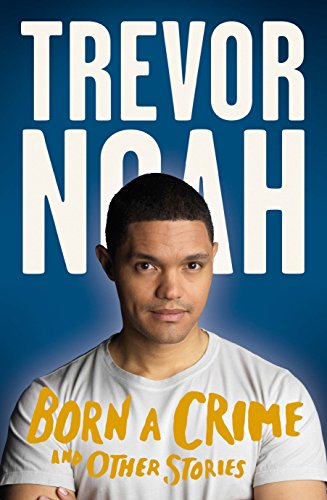

Trevor Noah’s, Born a Crime.
My rating: 5 of 5 stars
I didn’t know what I expected before I began reading Trevor Noah’s book. I sure had my assumptions, a sad tale and probably a huge focus of it on his career on the ‘Daily Show’. To my surprise Born a crime is, on one hand, a sad story of a
boy born in a time when he was literally a crime. But on the other hand, it’s a powerful book that holds a sense of humor that lightens up the dark events in life into something to laugh about. You might find yourself laughing out loud
before you realize the weight of the situation.
A page-turner that captures you from the first to the last page, leaving you yearning for more of Trevor’s dry jokes and almost dark sense of humor. Humor is the theme that dominates
the better part of this book and, things that would leave you scarred or traumatized were diluted with witty jokes. “You don’t ask to be accepted for everything you are, just the one part of yourself that you’re willing to share.
For me it was humor. I learned that even though I didn’t belong to one group, I could be a part of any group that was laughing. I’d drop in and pass out the snacks and tell a few jokes. I’d perform for them. I’d catch a bit of their conversation,
learn more about the group, and then leave. I never overstayed my welcome. I wasn’t popular, but I wasn’t an outcast. I was everywhere with everybody and at the same time I was all by myself” You would think he has it all, I mean the leverage
of having a mixture of both colors and ability to speak most of the languages spoken by most of the kids around him. Then why would he need to use tactics to be part of any group? Depressing right? Well not for Trevor. In this paragraph,
Trevor uses affiliative humor to gain friends and blend with a crowd that would otherwise not accept him.
With his skin color, he wouldn’t fit into any crowd, no one could relate to him in any way so he had to find ways to relate
with them. Things that teenagers and people have to struggle with within workspaces, struggling to fit in, Trevor is so familiar with this at a young age that he already derived a coping mechanism. That’s not the only way Trevor uses humor,
a lot of instances in his life are described in a comical way He uses humor to deflect a lot of bad things from happening to him or from receiving punishment
Trevor Noah: Marriage and Traditions
Male chauvinism, patriarchy, male dominance, male-dominated, masculine….All words to describe one thing, the male gender. We live in a world of men and the sooner we accept the better so we can actually focus on the solution and not just complain
about the problem. We have a lot of instances to relate to this problem, either through experiencing it first hand or seeing it happen.
How men are with their toys when they’re kids so are they with their wives . They want to possess
and we all know that doesn’t apply on humans, most especially if he happens to find a strong willed woman. In the Born a Crime Trevor has given a lot of instances in support of this theory. “ Abel wanted a traditional marriage and a traditional
wife. For a long time, I wondered why he ever married a woman like my mom in the first place, as she is the opposite of that in every way.
If he wanted a woman to bow to him, there were plenty of girls back in Tanzeen being raised
solely for that purpose. The way my mother always explained it, the traditional man wants a woman to be subservient, but he never falls in love with subservient women. He’s attracted to independent women. “He only wants a woman who is
free because his dream is to put her in a cage. “ -Trevor Noah Born a Crime In the excerpt above we see that most men will settle for a strong woman just to get the chance to subdue and break her. The way an equestrian will be excited
at the prospect of subduing a stallion, so do men find the same excitement when it comes to women. I’d like to say that men like Abel died a long time ago and the current man is any better but that would be a lie. Men are creatures of
habit and it is very hard to change their perspective on things, especially if they think they’re right. They would go to any extent just to show they’re superior. If a man feels under appreciated at their workplace they will find a way
to assert their power and most of the time will take it out on their family. Either through violence or sexual abuse, just as long as they’re recognized and respected or, most of the time feared. “I’m sorry. I don’t like doing these things,
but you know how your mum is. She can talk a lot and doesn’t listen. I feel like your mum doesn’t respect me sometimes.
She came and disrespected me in front of my workers. I can’t have these other men looking at me like I don’t
know how to control my wife.” Just for recognition and asserting his manliness Abel hit his wife. The only justification he had was that she disrespected him in front of his workers. Sometimes men don’t need a valid reason to do the things
they do, they just do it to feed on their egos and that’s the worst part, it’ll never be satisfied. Years after their divorce and Partricia had remarried he still couldn’t get over the fact that she got away from him. He followed her and
tried to kill her. Egos to men are an obsession, or an addiction that must always be satisfied, it keeps asking for more and more until there is nothing else to give it and it pushes the man over the edge. No one is to blame because just
as Partricia Noah always said “You cannot blame anyone else for what you do. You cannot blame your past for who you are. You are responsible for you. You make your own choice”